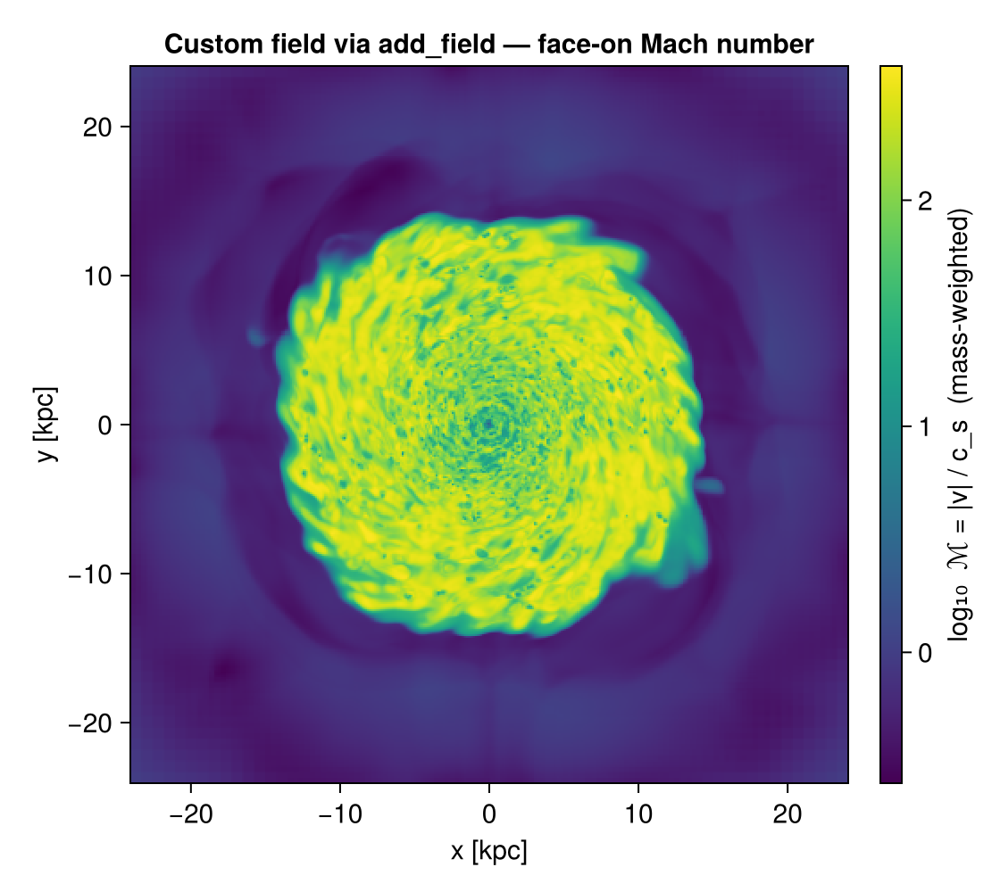

<!– GENERATED FILE. Do not edit this markdown. Source notebook: derivedfields.ipynb Regenerate with: MERADIR=<repo checkout> ./render_docs.sh Any edit here is lost the next time the docs are rendered. –>
Derived Fields & add_field
This page is also an executable Jupyter notebook — open / download derived_fields.ipynb. The notebooks run end-to-end and double as part of Mera's test suite.
Mera computes a large catalogue of derived quantities on demand through getvar — temperature, sound speed, Mach number, cylindrical/spherical velocities, specific angular momentum, Jeans length, kinetic/thermal energy, and many more. You ask for them by name and Mera builds them from the raw stored variables:
# Example-data root. Point this at your own simulation folder, or set the
# MERA_EXAMPLES environment variable; every path below is built from it.
MERA_EXAMPLES = get(ENV, "MERA_EXAMPLES", "/Volumes/FASTStorage/Simulations/Mera-Tests");
using Mera
info = getinfo(300, joinpath(MERA_EXAMPLES, "RAMSES/mw_L10"))
gas = gethydro(info, verbose=false);*__ __ _______ ______ _______
| |_| | | _ | | _ |
| | ___| | || | |_| |
| | |___| |_||_| |
| | ___| __ | |
| ||_|| | |___| | | | _ |
|_| |_|_______|___| |_|__| |__|
Mera v1.8.0
[Mera]: 2026-08-03T11:35:24.684
Code: RAMSES
output [300] summary:
mtime: 2023-04-09T05:34:09
ctime: 2025-06-21T18:31:24.020
=======================================================
simulation time: 445.89 [Myr]
boxlen: 48.0 [kpc]
ncpu: 640
ndim: 3
cosmological: false
-------------------------------------------------------
amr: true
level(s): 6 - 10 --> cellsize(s): 750.0 [pc] - 46.88 [pc]
-------------------------------------------------------
hydro: true
hydro-variables: 7 --> (:rho, :vx, :vy, :vz, :p, :scalar_00, :scalar_01)
hydro-descriptor: (:density, :velocity_x, :velocity_y, :velocity_z, :pressure, :scalar_00, :scalar_01)
γ: 1.6667
-------------------------------------------------------
gravity: true
gravity-variables: (:epot, :ax, :ay, :az)
-------------------------------------------------------
particles: true
- Nstars: 5.445150e+05
particle-variables: 7 --> (:vx, :vy, :vz, :mass, :family, :tag, :birth)
particle-descriptor: (:position_x, :position_y, :position_z, :velocity_x, :velocity_y, :velocity_z, :mass, :identity, :levelp, :family, :tag, :birth_time)
-------------------------------------------------------
rt: false
clumps: false
-------------------------------------------------------
namelist-file: ("&COOLING_PARAMS", "&SF_PARAMS", "&AMR_PARAMS", "&BOUNDARY_PARAMS", "&OUTPUT_PARAMS", "&POISSON_PARAMS", "&RUN_PARAMS", "&FEEDBACK_PARAMS", "&HYDRO_PARAMS", "&INIT_PARAMS", "&REFINE_PARAMS")
-------------------------------------------------------
timer-file: true
compilation-file: false
makefile: true
patchfile: true
=======================================================
Processing files: 100%|██████████████████████████████████████████████████| Time: 0:00:18 (29.23 ms/it)
✓ File processing complete! Combining results...These derived names also work everywhere getvar is used internally — in projection, profile, phase, and friends.
For the full set of formulas behind every derived quantity (thermodynamics, velocities, angular momentum, Mach numbers, Jeans/collapse, gravity) and the aggregate statistics (msum, center_of_mass, bulk_velocity, wstat), see How Quantities Are Computed.
Conventions for selected quantities
A few derived quantities carry physical assumptions worth stating explicitly:
- Jeans length
:jeanslengthuses the standard form $λ_J = c_s\,\sqrt{\dfrac{3π}{32\,G\,ρ}}$ (and:jeansmass/:jeansnumberfollow from it). This is one of several Jeans-length conventions in the literature; factors of order unity differ between them. - Magnetosonic Mach numbers
:mach_alfven,:mach_fast,:mach_slowrequire the magnetic-field components:bx,:by,:bz(an MHD run) and error otherwise. The B field is taken in RAMSES code units and converted to Gaussian-CGS internally (Alfvén speed $v_A = B/\sqrt{4πρ}$); fast/slow use $v_{f}=\sqrt{c_s^2+v_A^2}$ and the isotropic $v_{s}=c_s v_A/\sqrt{c_s^2+v_A^2}$. All three are dimensionless. (Because they need the field components,getvar_requirementslists:bx,:by,:bz,:rhoamong their dependencies.) - Escape speed
:escape_speed$= \sqrt{-2φ}$ is defined only where the potential $φ<0$ (bound); unbound cells ($φ≥0$, possible near boundaries) are clamped to0rather than erroring. - Cosmological-only quantities —
:overdensity/:delta(hydro) and:age-relatives:formation_time/:formation_redshift/:zform(particles) — are defined only for cosmological runs and error on non-cosmological output.
The dependency registry
Each derived quantity knows which raw variables it is built from. That graph is queryable:
println("T [K] range : ", extrema(getvar(gas, :T, :K)))
println("Mach range : ", extrema(getvar(gas, :mach)))
println("ekin [erg] (sum) : ", sum(getvar(gas, :ekin, :erg)))
println("requirements :ekin : ", getvar_requirements(:hydro, :ekin))
println("requirements [:sd,:T] : ", getvar_requirements(:hydro, [:sd, :T]))T [K] range : (10.195354771220304, 2.3032126579487386e8)
Mach range : (0.0015019848658968961, 790.5001832586903)
ekin [erg] (sum) : 3.445146674042365e57
requirements :ekin : [:rho, :vx, :vy, :vz]
requirements [:sd,:T] : [:p, :rho]This is what lets the one-call verbs read only what they need instead of the whole hydro state. project(info, :sd) reads just :rho; project(info, :sd; direction=:edgeon) also pulls the velocities required to orient the disk; quicklook reads only :rho and :p. When a requirement cannot be resolved (e.g. a custom field whose dependency is not stored in that output) the readers safely fall back to reading everything.
Adding your own field: add_field
Register a custom derived field once and it behaves like any built-in quantity — including inside projection and profile.
add_field(:vmag2, (obj, deps) -> deps[:vx].^2 .+ deps[:vy].^2 .+ deps[:vz].^2;
depends_on = [:vx, :vy, :vz])
println(":vmag2 via getvar : ", extrema(getvar(gas, :vmag2)))
m = projection(gas, :vmag2; verbose=false) # works in projection too
println(":vmag2 projection map : ", size(m.maps[:vmag2])):vmag2 via getvar : (9.736562820569741e-6, 371.6168616499286)
:vmag2 projection map : (1024, 1024)The compute kernel
compute(dataobject, deps):
dataobject— the data object the field is being evaluated on.deps— aDict{Symbol,Vector}holding the arrays named independs_on, already evaluated with the same centering and masking as the outergetvarcall.- Return the field in code units; Mera applies the requested
unit(or this field's defaultunit) for you.
Dependencies may be raw variables, other built-in derived quantities, or even other user fields — they are resolved recursively:
add_field(:mach_custom, (o, d) -> sqrt.(d[:vx].^2 .+ d[:vy].^2 .+ d[:vz].^2) ./ d[:cs];
depends_on = [:vx, :vy, :vz, :cs])
println(":mach_custom range : ", extrema(getvar(gas, :mach_custom))):mach_custom range : (0.0015019848658968961, 790.5001832586903)A registered field is a first-class citizen: it flows through getvar, projection, profile and the rest, with its dependencies read and resolved automatically. For example, once :mach_custom is registered, projection(gas, :mach_custom) just works:

Units
Give a field a default unit (it must be a field of info.scale, or :standard for code units). A unit passed at call time overrides the default:
add_field(:rho_msun_pc3, (o, d) -> d[:rho]; depends_on = [:rho], unit = :Msol_pc3)
getvar(gas, :rho_msun_pc3) # returns code-unit ρ scaled by info.scale.Msol_pc3
getvar(gas, :rho_msun_pc3, :standard) # call-time unit override → code unitsOther data types
By default fields are registered for hydro. Register for other kinds (or several at once) with datatypes:
add_field(:speed, (o, d) -> sqrt.(d[:vx].^2 .+ d[:vy].^2 .+ d[:vz].^2);
depends_on = [:vx, :vy, :vz], datatypes = [:hydro, :particle])Valid kinds: :hydro, :gravity, :rt, :particle, :clump.
Managing registered fields
list_fields(:hydro) # names you added for hydro (custom only)
list_fields(:hydro; builtin=true) # built-in derived fields ∪ your custom ones, sorted
field_info(:vmag2) # (; compute, depends_on, unit, description)
delete_field(:vmag2) # remove it (delete_field(name; datatypes=:all) by default)list_fields(kind; builtin=true) is the quickest way to discover what you can ask getvar for on a given data type — it returns the dependency-registry built-ins together with any fields you registered. It covers most but not every built-in quantity (a few specialised fields are computed directly in getvar); for the complete human-readable catalogue call getvar() with no arguments.
The default (builtin=false) lists only the fields you registered, so it starts empty and grows as you add_field (and shrinks again on delete_field):
list_fields(:hydro) # builtin=false (default): custom fields only — none yetSymbol[]add_field(:speed2, (o, d) -> d[:vx].^2 .+ d[:vy].^2 .+ d[:vz].^2; depends_on=[:vx, :vy, :vz])
list_fields(:hydro) # the field you just added now appears1-element Vector{Symbol}:
:speed2delete_field(:speed2)
list_fields(:hydro) # removed again → back to emptySymbol[]With builtin=true the same call instead returns the full catalogue. The lists below are generated live from the registry at doc-build time, so they always match the installed version. Hydro:
list_fields(:hydro; builtin=true)73-element Vector{Symbol}:
:T
:T_rt
:Temp
:Temperature
:beta
:bmag
:bx
:by
:bz
:cellsize
⋮
:vz2
:vθ_sphere
:vϕ_cylinder
:vϕ_cylinder2
:vϕ_sphere
:x
:y
:z
:ϕGravity, RT, particle, clump (same call, different kind):
list_fields(:gravity; builtin=true)17-element Vector{Symbol}:
:a_magnitude
:ar_cylinder
:ar_sphere
:aθ_sphere
:aϕ_cylinder
:aϕ_sphere
:cellsize
:escape_speed
:gravitational_redshift
:r_cylinder
:r_sphere
:specific_gravitational_energy
:volume
:x
:y
:z
:ϕlist_fields(:particle; builtin=true)48-element Vector{Symbol}:
:T
:Temp
:Temperature
:age
:beta
:bmag
:cellsize
:cs
:e_magnetic
:ekin
⋮
:vr_sphere
:vx2
:vy2
:vz2
:vθ_sphere
:vϕ_cylinder
:vϕ_sphere
:zform
:ϕ(rt = list_fields(:rt; builtin=true), clump = list_fields(:clump; builtin=true))(rt = [:cellsize, :r_cylinder, :r_sphere, :volume, :x, :y, :z, :ϕ], clump = [:ekin, :mass, :v, :x, :y, :z])Registered fields live for the current Julia session (they are not persisted to disk). Put your add_field calls in a startup script or at the top of your analysis to make them available every run.
Registered fields also work as quantities in First-Look Reports cards — the report reads only the dependencies your field declares.
Custom units
A field's unit can be an existing info.scale field, :standard, a plain number (a literal code→display factor), or a custom unit you register with add_unit. Registered units work everywhere a unit is accepted — including getvar(obj, var, unit) for built-in quantities:
add_unit(:Msun_per_century, 1e-2) # 1 code-unit value × 1e-2
add_field(:mdot, (o,d) -> d[:rho]; depends_on=[:rho], unit=:Msun_per_century)
getvar(gas, :mass, :Msun_per_century) # also applies to built-in fields
list_units(); delete_unit(:Msun_per_century)Inspecting dependencies
field_dependencies(:hydro, :ekin) # (; direct=[:mass,:v], raw=[:rho,:vx,:vy,:vz])
field_tree(:hydro, :mach) # prints the dependency tree down to raw leavesmach
├─ v
│ ├─ vx (raw)
│ ├─ vy (raw)
│ └─ vz (raw)
└─ cs
├─ p (raw)
└─ rho (raw)See also
Registered fields are used throughout Mera: getvar computes them, projection and profile read only the dependencies they need (via getvar_requirements), and the First Look (quicklook / report) verbs benefit from the same needs-based reading. See also Star-Formation Rate and Clump Finding for fields used in analysis.
API
Mera.add_field — Function
add_field(name::Symbol, compute::Function; depends_on=Symbol[], datatypes=:hydro,
unit::Symbol=:standard, description::String="")Register a user-defined derived field that then behaves like any built-in getvar quantity — it works in getvar, and therefore in projection, profile, phase, etc.
compute(dataobject, deps)— your kernel.depsis aDict{Symbol,Vector}holding the arrays ofdepends_on(already centered / masked consistently). Return the field in code units; the requestedunit(or this field's defaultunit) is applied for you.depends_on— the variables your kernel needs (built-in or other user fields). These are also recorded in the dependency graph sogetvar_requirements(and the read-only-what-you-need logic inproject/quicklook) cover your field.datatypes— a kind symbol or collection of them::hydro,:gravity,:rt,:particle,:clump.unit— default unit symbol (must be a field ofinfo.scale, or:standard).
add_field(:vmag2, (o, d) -> d[:vx].^2 .+ d[:vy].^2 .+ d[:vz].^2; depends_on=[:vx,:vy,:vz])
getvar(gas, :vmag2)
projection(gas, :vmag2)See also delete_field, list_fields.
Mera.delete_field — Function
delete_field(name::Symbol; datatypes=:all)Remove a previously add_field-registered field. datatypes=:all (default) removes it from every kind; otherwise pass a kind symbol or collection.
Mera.list_fields — Function
list_fields(kind::Symbol=:hydro; builtin::Bool=false) -> Vector{Symbol}The registered derived-field names for a data-type kind (:hydro, :gravity, :rt, :particle, :clump), sorted.
By default only the user-added fields (registered with add_field) are returned — this is the back-compatible behaviour. With builtin=true the result also includes the built-in derived quantities known to the dependency registry (FIELD_DEPS[kind]), so you get a single combined list of everything resolvable for that kind:
list_fields(:hydro) # only the fields you added
list_fields(:hydro; builtin=true) # built-in registry fields ∪ your custom fieldsNote: builtin=true reflects the dependency registry, which covers most but not every built-in quantity (a few specialised fields, e.g. some RT-ionization variables, are computed directly in getvar without a registry entry). For the full human-readable catalogue call getvar() with no arguments.
list_fields(data; io=stdout) -> Vector{NamedTuple}Which derived fields are available for this loaded object, and — where it matters — which variant of a field would actually run. Unlike list_fields(:particles), which answers for a data kind, this answers for the columns you actually read.
Each entry is (name, available, missing, using_optional, note):
available— every required column is present, sogetvar(data, name)will work;missing— the required columns that are absent (empty whenavailable);using_optional— optional columns that ARE loaded and will therefore be used;note— the variant description, when the field has one.
This exists because a field's value can depend on what was loaded, not only on the snapshot. getvar(gas, :T) takes μ from :ne when present and falls back to a neutral-primordial μ ≈ 1.22 otherwise — up to a factor ~2 apart for ionised gas — so the same call on the same snapshot gives different temperatures depending on the vars= used at load time. This is the only place that says so.
gas = getparticles(info; families=[0], vars=[:rho, :u]) # no :ne
for f in list_fields(gas)
f.name === :T && println(f.note, " using: ", f.using_optional)
end
# → "μ from :ne when it was loaded; neutral-primordial μ≈1.22 otherwise" using: Symbol[]See also getvar_requirements, getvar_optional, field_info.
Mera.field_info — Function
field_info(name::Symbol; kind::Symbol=:hydro)The registration record (; compute, depends_on, unit, description) for a user field, or nothing if it isn't registered for that kind.
Mera.field_dependencies — Function
field_dependencies(kind::Symbol, var::Symbol) -> (; direct, raw)Inspect a derived field's dependencies for data-type kind: direct are its immediate dependencies (raw or derived, as declared), raw is the transitive set of physical stored variables it ultimately needs (same as getvar_requirements). Works for built-in and add_field-registered quantities.
Mera.field_tree — Function
field_tree(kind::Symbol, var::Symbol; io=stdout)Pretty-print the dependency tree of a derived field down to its raw leaves (cycle-safe).
Mera.add_unit — Function
add_unit(name::Symbol, factor::Real)Register a custom unit: a value in code units is multiplied by factor to convert to this unit. The name then works anywhere a unit symbol is accepted — in add_field (as the field's default unit), and in getvar(obj, var, name).
add_unit(:Msun_per_yr, 1.0) # e.g. for an SFR-like custom field
add_field(:mdot, (o,d)->d[:rho]; depends_on=[:rho], unit=:Msun_per_yr)See also delete_unit, list_units.
Mera.delete_unit — Function
delete_unit(name::Symbol)Remove a custom unit registered with add_unit.
Mera.list_units — Function
list_units() -> Vector{Symbol}The custom unit names registered with add_unit.
Mera.getvar_requirements — Function
getvar_requirements(kind::Symbol, vars) -> Vector{Symbol}The sorted set of physical stored variables that must be read to compute vars (a Symbol or a collection), with always-present geometry leaves (:cx/:cy/:cz, :level, :x/:y/:z, :cellsize, :volume, …) removed. Unknown/custom symbols are returned as-is (callers can detect these and fall back to reading everything).
getvar_requirements(:hydro, :ekin) # [:rho, :vx, :vy, :vz]
getvar_requirements(:hydro, [:sd, :T]) # [:rho, :p] (:sd is an alias of surface density → :rho)